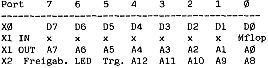
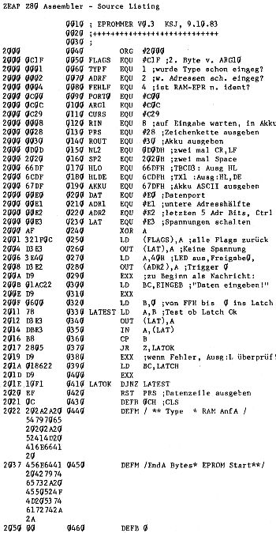

80-Bus Journal |
Jan/Feb/März 1984 · Ausgabe 1 |
Das EPROM-Programmier-Programm ist 55BH Bytes lang, kann in einem EPROM laufen (und eigentlich auch mit Nassys1), benutzt den vollen zweiten Registersatz und piepst manchmal am Port0, Bit2 (wenn es mit dem Brennen fertig ist und wenn beim Menü etwas falsch eingeg. wurde). Die drei benötigten Flags wurden im ARG10 (£C1F) angesiedelt, sonst sind alle Adressen in Registern untergebracht (in IX RAM-Anfangsadr, in IY RAM-Endadr und in DE‘ die Startadr im EPROM. Am Beginn jeder Routine wird die RAM-Anfadr. in HL, die Endadr. in DE und die EPROM-Start-Adr. in HL‘ geladen). Nach Eingabe des EPROM-Typs und der Adressen stehen folgende Funktionen zu Verfügung:
Kopieren: EPROM-Bereich wird ins RAM kopiert.
Verify: Das EPROM wird mit dem RAM verglichen und die unterschiedlichen Bytes ausgegeben (immer fünf auf einmal, mit ‚Shift New Line‘ kommt man ins Menü, auch wenn noch nicht alle unterschiedlichen Bytes ausgegeben wurden).
Brennen: Es wird vor dem eigentlichen Brennen ein Blank-Check und danach ein EPROM-RAM Vergleich durchgeführt. Beim Brennen leuchtet die LED. Für den Blank-Check muß nur der EPROM-Typ eingegeben worden sein, nach der Länge des EPROMs wird dann automatisch gefragt: (0 bis ????), d.h. man kann keine einzelnen Sektoren eines EPROMs herausgreifen und nach Blanks überprüfen (das wird sowieso vor dem Brennen gemacht), sondern nur ab Adresse 0.
Beim Brennen, Kopieren und Verifizieren wird durch das vorgestellte Unterprg. OKAYFL zuerst überprüft, ob die Adressen und der Typ eingegeben wurden, dann hat man durch Drücken eines anderen Buchstabens als ‚J‘ nach der Frage, ob die Daten stimmen, die Möglichkeit, zurück ins Menü zu gelangen, und schließlich wird man aufgefordert, ‚1‘ zu drücken, nachdem man das EPROM in die Fassung gesteckt hat. Drückt man eine andere Taste als ‚1‘, landet man wieder bei der Frage, ob die Daten stimmen.
Nun eine kurze Beschreibung des Softwarekonzeptes.
Zuerst wird 40H in Port X2 (ADR2) geschrieben, um die LED auszuschalten (0=ein) und um das Trigger-Bit und das Freigabe-Bit auf 0 zu setzen (s. Tabelle). Als nächstes soll das Steuerwort für die jeweilige Spannung in Port X3 (LAT) geschrieben werden. Für den 2716 25H; für 2732 5AH; für 2732A 9AH; für 2764 14H.
Beim Lesen (Unterprg. IN) wird zuerst die untere Adresshälfte in X1 (ADR1) ausgeg., dann muß in dem Byte mit der oberen Adresshälfte das LED-Bit auf 1, Trigger und Freigabe auf 0 gelegt werden (AND 1FH, OR 40H) und in X2 (ADR2) geschrieben werden. Vom Daten-Port X0 (DAT) kann mann sich dann das Datum holen.
Beim Brennen wird die LED eingeschaltet und das Freigabe-Bit auf 1 gelegt (80H). Dann wird das zu programmierende Datum in Port X0 (DAT), und die untere Adrhälfte in Port X1 (ADR1) geschrieben. Folgendes wird fünfzig mal wiederholt, damit dann im ganzen mind. 50ms lang programmiert wurde. Das Byte mit der oberen Adrhälfte wird so maskiert, daß das Brennen freigegeben (Bit7) und das Monoflop getriggert wird (AND 1FH, OR A0H). Dann das Trigger-Bit wieder auf 0 setzen (AND DFH) und in einer Schleife (BRENN3) das Bit0 des Port’s X1 (ADR1) abfragen. Dieses Bit ist – durch das Monoflop – eine Millisekunde lang logisch 1.
Wenn dieser Vorgang 50 mal wiederholt wurde, die Adressen erhöhen und von vorne anfangen. Mein Brenn-Algorithmus ist nicht gerade einer, den man einen intelligenten nennt, aber bis jetzt hat er noch jedes EPROM einwandfrei gebrannt.
Wem das EPP V0.3 zu lang ist, der kann ja die V1.1 eintippen, sie ist bedeutend kürzer, relokatibel und führt auch automatisch vor dem Brennen einen Blank-Check und danach einen RAM-EPROM Vergleich durch (es wird nur ein „Bla Error“, wenn ein Blank entdeckt und ein „Ver Error“ wenn ein Unterschied beim Vergleichen entdeckt wurde ausgegeben.)
Das Eingabeformat ist folgend:
E XXXX AAAA EEEE SSSS YY
XXXX ist beim Brennen die Programm-Anfangsadresse, beim Kopieren ist XXXX die Anfangsadresse + 2 (!).
AAAA, EEEE, SSSS ist die Anfangs- und End-Adr des RAM-Bereichs und die Start-Adresse im EPR. YY steht für den EPR-Typ, also 16, 32, 3A (für 2732A !!) und 64. Mit ‚EPROM!‘ wird man aufgefordert eben dieses einzusetzen. Wenn der RAM-EPROM vergleich positiv abgeschlossen wurde, wird „Ok“ausgegeben.


| Seite 40 von 52 |
|---|